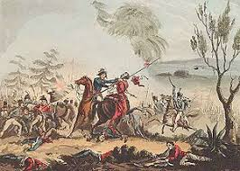

¿Que sucedio?
Entre diciembre de 1861 y enero de 1862 las flotas armadas de España, Francia e Inglaterra, desembarcaron en Veracruz para ocupar las aduanas, presionar al gobierno mexicano y recuperar sus capitales. Los representantes de España e Inglaterra, el general Juan Prim y el embajador Charles Wyke, aceptaron negociar y llegar a un entendimiento con el ministro del exterior Manuel Doblado por lo que reembarcaron sus tropas y regresaron a sus países; no así el francés que exigió el pago inmediato de la deuda y Charles Ferdinand Latrille Conde de Lorencez siguiendo la consigna de Napoleón III, continuó con los planes de establecer una monarquía en México
Esto provoco:
La ruptura de la alianza tripartita y el incumplimiento de los ‘Tratados preliminares de La Soledad’; con lo que da inicio al conflicto armado entre México y Francia siendo el 19 de abril de 1862 cuando se realizan los primeros disparos en El Fortín en Veracruz. Los franceses y mexicanos conservadores establecieron un simulacro de gobierno en Orizaba, Veracruz encabezado por el general Juan Nepomuceno Almonte para que los representara.
Antes del enfrentamiento
Lorencez escribía cartas al ministro de la Guerra en las que expresaba lleno de soberbia, el complejo de superioridad de los europeos, con frases como: “Tenemos sobre los mexicanos tal superioridad de raza, organización, disciplina, moralidad y elevación de sentimientos, que os ruego digáis al emperador que a partir de este momento, y a la cabeza de seis mil soldados, soy el amo de México
Con:
4,000 hombres, el general Ignacio Zaragoza concentró sus fuerzas en Puebla para su defensa, ordenando que se levantaran barricadas en las calles y resguardándose en tres cerros que rodean la ciudad con los fuertes de San Juan, Guadalupe y Loreto. El Ejército de Oriente, estaba dirigido por los generales Miguel Negrete, Felipe Berriozabal, Porfirio Díaz, Francisco Lamadrid, Santiago Tapia, Antonio Álvarez, Antonio Carbajal y Tomás O’Horán; siendo Negrete quien, al mando de 1,200 soldados, defendería los fuertes, y quien llevó el peso de la batalla, auxiliado por los demás generales, dirigidos por el general Zaragoza
Por otra parte:
el ejército francés compuesto de los famosos zuavos - soldados de la infantería de marina, fusileros y cazadores - al mando del conde de Lorencez salieron de Amozoc hacia Puebla la mañana del 5 de mayo de 1862 donde tuvo lugar el histórico combate en el que el ejército republicano venció a los soldados imperialistas.

Seguir leyendo


 1
1 2
2 3
3 4
4 5
5 8
8